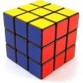

23 juillet 2007

Trouvé sur Lifehacker, un test bien fichu pour déterminer votre profil d’apprentissage : visuel / auditif / tactile (lien cassé désormais).
Je suis un visuel/non-verbal (score de 38, contre 30 pour visuel/verbal, 30 pour tactile, et 24 pour auditif).
Ce n’est pas un scoop et votre résultat ne devrait pas vous surprendre si vous avez dû pour vos études ou votre job trouver un moyen efficace d’ingurgiter des masses d’informations.
Mais le point intéressant est qu’en fonction de votre profil le site vous propose des techniques pour mieux assimiler ce que vous voulez retenir.
22 juillet 2007
Ce formulaire vous permet, à partir du code de 13 caractères fourni par le transporteur, de savoir où en est l’acheminement de votre colissimo.
Attention, la 1ère journée l’information risque de ne pas être disponible !
12 juillet 2007
Communiquer, est-ce que ce n’est pas simplement faire passer la pilule ? Si vous avez à transmettre un message, vous avez besoin d’ouvrir l’auditeur à votre message : créer du temps de cerveau disponible, comme disait l’autre… Et pour cela, quoi de mieux que les neuf types d’histoires dont les gens aiment le plus parler ?
9 juillet 2007
Un article amusant à défaut d’être très touffu sur la procrastination : Procrastination: Then Things To Know. Extrait :
There’s more than one flavor of procrastination. People procrastinate for different reasons. Dr. Ferrari identifies three basic types of procrastinators:
- arousal types, or thrill-seekers, who wait to the last minute for the euphoric rush.
- avoiders, who may be avoiding fear of failure or even fear of success, but in either case are very concerned with what others think of them; they would rather have others think they lack effort than ability.
- decisional procrastinators, who cannot make a decision. Not making a decision absolves procrastinators of responsibility for the outcome of events.
19 mai 2007
Certains jours, lorsqu’en regardant le ciel bleu, allongé dans l’herbe, je ferme un peu les paupières, je vois des petits grains de lumière qui semblent vivre et se bousculer comme des fourmis. Le soleil paraît alors jouer à la surface de mes yeux mi-clos comme sur les vaguelettes d’un océan minuscule. Si je ferme encore un peu de sorte que mes cils fassent plus d’ombre à la surface cristalline, et que je regarde tout près, j’y vois des cellules comme sur ces images des livres de biologie qu’on étudiait au lycée, sauf qu’elles semblent flotter à la surface de mes globes océaniques, dérivant au gré des mouvements que je m’amuse à donner pendant de longues minutes… Si maintenant je les ferme complètement, le souvenir de la lumière imprime encore dans l’obscurité des tâches colorées qui viennent, vibrent quelques secondes puis disparaissent dans la nuit. Après cette aurore boréale je rouvre les yeux sur la réalité, qui a le visage d’un grand ciel bleu. Pas mal non plus.
17 mai 2007
Chez un opérateur Internet, quand un client s’abonne à la Voix sur IP par exemple, il faut configurer le logiciel qui tourne dans sa box : adresse du serveur VoIP, login et mot de passe du client, etc. C’est ce qu’on appelle l’activation du terminal. Alors soit on envoie ces infos au client par mail et c’est à lui de les rentrer dans la box, soit on essaye de lui faciliter la vie avec un mécanisme d’auto-provisioning.
30 avril 2007

Hier j’ai acheté un Rubik’s cube et j’ai appris à le résoudre. Plus qu’une lubie de geek c’est une revanche sur le cube qui a nargué mes années d’enfance. Je m’en souviens encore, c’était un cube aux couleurs de l’équipe de France de foot de l’époque. Il y avait Platini, Tigana, Giresse, Hidalgo, tous mélangés… j’y ai passé des heures, des jours peut-être, mais je ne l’ai jamais résolu. Je n’en rougis pas, j’avais six ans.
18 mars 2007
Je reviens après quelques semaines, vacances lointaines, autres priorités, etc. L’Afutt publie aujourd’hui dans le JDD son observatoire annuel des plaintes dans le secteur des télécoms. J’y ai ajouté le ratio plaintes/parc qui permet de voir chez qui les clients sont les plus mécontents. Résultat des courses :
| Opérateur |
Plaintes |
Pourcentage |
Parc |
Plaintes/parc |
| Alice |
1849 |
31% |
5.4% |
5.66 |
| Free |
1310 |
22% |
20.3% |
1.07 |
| Club Internet |
1267 |
21% |
4.6% |
4.55 |
| Neuf |
834 |
14% |
10.1% |
1.36 |
| Noos |
619 |
10% |
4.1% |
2.49 |
| Orange |
175 |
3% |
48.6% |
0.06 |
11 février 2007

Tim O’Reilly cite dans ce billet Bob Young, l’un des fondateurs de Red Hat qui expliquait qu’avec l’open source, « ce que l’on vend c’est du contrôle » : c’est la possibilité de modifier le logiciel si l’on n’est pas satisfait, ou d’en prendre un autre s’appuyant sur les mêmes standards.
L’ami Tim tire alors un parallèle intéressant avec son article Open source paradigm shift, préliminaire à son invention de la notion de Web 2.0.
5 février 2007

Rien de technique aujourd’hui. Juste une histoire qui a la force d’un proverbe. Build a plane and fly to Sicily. L’histoire d’un type qui fait des copies en plâtre de Michel-Ange dans son garage. Et qui construit des avions. Parce que sa femme veut aller en Sicile. Est-il sérieux ? Peu importe, il suffit d’avoir le coeur d’y croire pour se laisser convaincre. Il explique : « Comment tu veux que je regarde le travail de Michel-Ange toute la journée et puis je rentre à la maison et je regarde ces trucs débiles à la télé ? »
La force d’un proverbe, parce que le décliner explicitement serait à la fois trop évident et trop difficile. Alors à chacun d’y trouver l’inspiration qu’il veut…